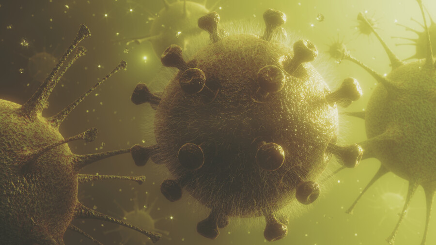

Информацию о том, что индийского штамма Covid-19 не существует, назвали фейком
В Министерстве информации и общественного развития (МИОР) опровергли информацию о том, что индийского штамма коронавирусной инфекции не существует, сообщает StopFake.
Ролик, в котором якобы говорится, что власти Индии отрицают существование этого вида инфекции распространяется в Instagram.
'В интернете распространяется ложное заявление, которое подразумевает, что 'индийский вариант' коронавируса распространяется по странам.Это полностью ложь', – приводит StopFake цитату письма индийских властей.
Читайте также:
В МИОР отметили, что в своём обращении власти Индии лишь призывают не называть штамм 'индийским'.Они не отрицают факт его существования.
'Этот штамм называют 'индийским', потому, что он был обнаружен в Индии в декабре 2020 года.Другие мутации коронавируса также носят географические наименования, например, бразильский штамм, южноафриканский или британский.Саму болезнь Covid-19 ещё до появления этого термина в США называли 'китайским вирусом' или 'уханьским вирусом'.Однако позже от использования этих словосочетаний отказались, так как пандемия распространилась на весь мир, а термин 'китайский вирус' не отражал её размеров и вводил в заблуждение', – добавили в МИОР.
Некоторые также сочли, что названия 'уханьский вирус' и 'китайский вирус' служили политической повестке, делая отношения КНР и США более напряжёнными, сообщили в МИОР.
'Вероятно, из этих же соображений власти Индии решили потребовать прекратить называть одну из мутаций 'индийским штаммом', при этом существование самого штамма не отрицают.Из этого следует, что сообщения о том, что индийский штамм выдуман – лишь неверная интерпретация новости', – говорится в информации StopFake.
Индийский штамм в Казахстане пока не выявили, а британский вариант установили в 30% образцов коронавируса, которые зарегистрировали в стране в апреле.
Posted On: 2021-05-25T15:41:00
Posted By: Амина Смакова

Content Date: 2021-05-25
Download Date: 2021-09-16
Document ID: L0C04GA2N